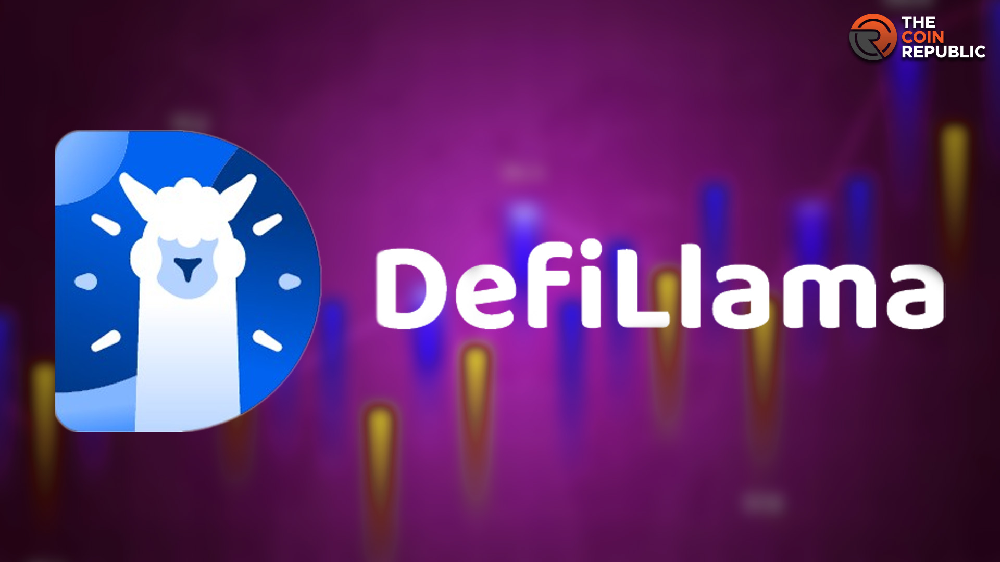

## DefiLlama: My Accidental Obsession with Cross-Chain Bridges (and Why You Should Care Too)
Okay, confession time. I’m not a DeFi guru. I’m more of a "watches YouTube tutorials while simultaneously stressing about my grocery bill" kind of person. But lately, I've found myself weirdly hooked on DefiLlama. It all started innocently enough; I was trying to understand why my measly ETH investment felt like it was perpetually stuck in some digital purgatory – a purgatory, I now realize, is often a cross-chain bridge.
For the uninitiated (like me, a week ago), DefiLlama is basically a dashboard that tracks the TVL (Total Value Locked) across various decentralized finance protocols. Think of it as the ultimate scorekeeper for the wild, wild west of crypto. It shows you where the money is flowing, which chains are hot, and – most importantly for me – just how much digital treasure is languishing in transit between different blockchains.
And that's where the bridges come in. These bridges are, in theory, elegant solutions. They're supposed to allow seamless movement of assets between different blockchains – like magical portals connecting disparate crypto kingdoms. But in practice? Well, sometimes they feel more like rickety rope bridges strung across a chasm of high gas fees and questionable security. I've even jokingly started referring to them as "liquidity black holes" because, let's be honest, sometimes you just… lose track of your tokens for a while.
DefiLlama, though, shines a light into this darkness. It helps you track your assets, even the ones seemingly lost in the ether (pun intended!). You can see your token’s journey, watching as it nervously makes its way across the bridge, hoping it doesn't get eaten by a rogue bot or a sudden surge in gas prices. It's a bit like using FlightAware to track a delayed flight – except instead of a delayed flight, it’s your hard-earned crypto, slowly making its way to its destination.
One of the things that I find truly fascinating about DefiLlama, however, is its ability to highlight the imbalances in the DeFi ecosystem. Some chains are absolutely bursting with TVL, while others are practically deserted. This isn't just interesting from a purely financial perspective; it speaks volumes about the direction of the entire industry. Are we heading towards a multi-chain future, or will a few dominant players ultimately win out? DefiLlama allows us to observe these shifts in real-time, giving us a glimpse into the future of decentralized finance.
Now, I know what you're thinking: "This all sounds incredibly complicated." And you're right. It is. I'm still wrestling with the complexities myself. There are times when I stare at DefiLlama's intricate charts, feeling like I've stumbled into a high-stakes game of digital chess, and I'm woefully underprepared. But that's part of the appeal, isn't it? The thrill of trying to understand something complex, of piecing together the puzzle and seeing the bigger picture.
Looking back at my own journey with DefiLlama, I realize I started out with a very basic need: tracking my own funds. But I ended up with something far more valuable – a newfound appreciation for the intricate mechanisms driving the DeFi revolution. This journey to understand DefiLlama's usefulness has reminded me that even the most complex systems can be made more accessible with the right tools and a dash of curiosity. And that, my friends, is a valuable lesson worth more than any crypto gains.

## Lost in Translation (and Bridges): My DefiLlama Deep Dive
Okay, confession time. I'm not exactly a DeFi wizard. I’m more of a “enthusiastic beginner who occasionally accidentally sends ETH to the wrong address” kind of guy. So, when I stumbled upon DefiLlama's list of bridge protocols, my initial reaction was somewhere between intrigued curiosity and mild terror. It looked like a spreadsheet from the Matrix – rows and rows of cryptic names and numbers. Think "Excel meets the blockchain apocalypse," and you're pretty close.
The whole idea of a bridge, in the DeFi context, seemed initially, well, a bit… bridge-y. Like, overly metaphorical. But then I thought about it. It's actually quite elegant. These protocols are essentially digital tunnels, letting you ferry your crypto tokens between different blockchains. Imagine trying to get a pizza delivered from a restaurant that only accepts Dogecoin, when you're only holding Ethereum. A bridge protocol is your savior, your digital pizza-delivery guy, ensuring that delicious, crypto-fueled pizza arrives safely.
DefiLlama, for those uninitiated (like my past self), is this amazing website that tracks pretty much everything happening in the Decentralized Finance world. It’s a fantastic resource, but it can feel overwhelming. I spent hours browsing its bridge protocol listings – a task slightly more stimulating than watching paint dry, but less exciting than a live alpaca shearing contest.
I noticed some familiar names – Wormhole, RenBridge (now renamed Bridge), Chainlink. These are the established players, the titans of the bridge world. They've survived the crypto winters, weathered the storms, and somehow still manage to look somewhat trustworthy (or at least, less untrustworthy than some of the others).
Then there's the less-known players, the newcomers, the crypto startups with names that sound like they were generated by a particularly creative AI algorithm. And that's where things get interesting (and slightly worrying). How do you even begin to assess the trustworthiness of a bridge protocol named something like "QuantumLeapTransdimensionalBridge"? Is it secure? Is it audited? Is it just a clever front for a rug pull waiting to happen?
Honestly, the sheer volume of bridge protocols on DefiLlama is both exciting and terrifying. The potential for innovation and interoperability is immense. But it also feels a bit like the Wild West out there. There's a real risk of accidentally crossing a rickety, poorly-maintained bridge that collapses under the weight of your hard-earned crypto.
My journey through DefiLlama's bridge listings wasn't about finding the "best" protocol (because that's entirely dependent on your specific needs and risk tolerance). It was about appreciating the sheer scale of this nascent technology. It's a testament to human ingenuity, to the ever-evolving nature of finance, and to our collective, slightly reckless, desire to build a truly decentralized future.
So, did I become a bridge protocol expert after my deep dive? Absolutely not. Did I gain a better appreciation for the complexities and risks involved? Definitely. Did I accidentally send any more ETH to the wrong address? Let's just say I’m still learning. But hey, that's the beauty – and the terror – of DeFi, isn't it? It's a journey, not a destination (unless that destination is financial freedom, in which case, please tell me your secrets).
## Chasing the DeFi Dragon: My (Slightly Chaotic) Journey with DefiLlama
Remember that scene in "Indiana Jones and the Last Crusade" where Indy’s navigating that treacherous path, one wrong step from a fatal plunge? That's kind of how I felt diving into DeFi liquidity flow tracking, except instead of a booby-trapped temple, it was a sea of ever-shifting numbers on DefiLlama.
I’m not a seasoned DeFi wizard, more like a curious apprentice still figuring out the difference between a stablecoin and…well, something else stable. My foray into this world started innocently enough. I wanted to understand where the money was actually flowing in the decentralized finance ecosystem – not just the headlines about another rug pull or a billion-dollar hack. It felt like trying to find Waldo in a kaleidoscope of blockchains.
That’s where DefiLlama stepped in (or, rather, I stumbled upon it). At first glance, it looked like a spreadsheet exploded onto a website. Rows upon rows of data, acronyms that felt like a secret language whispered by crypto bros… overwhelming, to say the least. But slowly, painstakingly, I started to unravel the magic (or maybe just the very complex math).
DefiLlama, in its raw, unfiltered glory, is a treasure trove. It’s not just numbers; it’s a pulse of the DeFi heartbeat. You can track total value locked (TVL), see which protocols are gaining traction, and even – brace yourself – get a glimpse into the underlying liquidity dynamics. Think of it as a financial seismograph, picking up tremors of capital movement across the decentralized landscape.
But here's the thing: it's not always easy to interpret. Sometimes, it feels like deciphering ancient hieroglyphs. The sheer volume of data can be paralyzing. I spent hours staring at charts, wrestling with the meaning of "impermanent loss," and generally feeling like a goldfish in a tank full of abstract concepts.
One minute, I’d be convinced I'd cracked the code, the next I’d be questioning if I even understand the basics. Did I just accidentally stumble into a black hole of information? Is this even useful to the average person, beyond the hardcore DeFi enthusiast? These were genuine questions that ran through my head many a time.
And yet… there's a certain thrill to it. The challenge of making sense of the chaos, the satisfaction of uncovering a trend, the feeling that you're peering behind the curtain of a rapidly evolving financial system – it's addictive. You start to notice patterns, understand the interconnectedness of different protocols, and gain a deeper appreciation for the complexities of decentralized finance.
So, where am I now on my journey? I'm still far from mastering DefiLlama, still wrestling with its intricacies. But I've learned a lot more than I anticipated. More importantly, I've learned the value of patience and persistence in deciphering the digital world. DefiLlama isn't just a tool; it's a window into a new financial frontier, and understanding it, even imperfectly, feels like gaining a superpower in this rapidly changing crypto world. The dragon may still be out there, but at least I have a map… a slightly crumpled, partially deciphered map, but a map nonetheless. And that, my friends, is progress.
## Decoding DefiLlama's TVL Magic: It's Not as Simple as it Looks (Honest!)
So, I was explaining DeFi to my grandma the other day – picture this: me, armed with a whiteboard, attempting to break down the concept of "Total Value Locked" (TVL) to someone who still uses a rotary phone. It went... okay. The part about the magic internet money was surprisingly well-received, but the moment I mentioned DefiLlama's role in measuring it all? Blank stare. And that's when I realized: maybe it's not as straightforward as it seems.
DefiLlama, that trusty dashboard we all rely on for those crucial TVL numbers, paints a pretty picture of the decentralized finance landscape. Billions of dollars swirling around, crossing chains, breeding yield… it’s mesmerizing. But how does it actually pull off this impressive feat of aggregation? That’s the question that keeps me up at night (okay, maybe not up at night, but definitely for a few minutes).
The short answer is: it's complicated. Think of it like trying to count all the grains of sand on a beach, but instead of sand, it's crypto, and instead of a beach, it's a sprawling, interconnected network of blockchains. DefiLlama doesn't directly access every single transaction on every single chain. That would be, frankly, insane. Instead, it leverages APIs provided by various protocols and bridges. These APIs, essentially, offer a glimpse into the inner workings of these projects, spitting out data on locked assets.
Now, here’s where things get a bit… murky. Not every protocol provides perfectly reliable or comprehensive data via their APIs. Some might be lagging, others might only report partial information. It's like trying to assemble a jigsaw puzzle with some pieces missing, some blurry, and a few that might even belong to a completely different puzzle. The result? An approximation, a snapshot in time that's constantly evolving and, let's be honest, sometimes a little inaccurate.
And then there's the issue of bridges. Ah, bridges. Those crucial pathways connecting different blockchains. DefiLlama needs to track assets moving across these bridges to accurately calculate TVL. But each bridge operates differently. Some are transparent, openly sharing their data; others are… less so. Getting a complete picture becomes a detective's game, involving cross-referencing information from various sources, interpreting different formats, and occasionally, just plain guesswork. It's a beautiful mess, really.
So, is DefiLlama's TVL data perfect? Absolutely not. Is it useful? Incredibly so. It provides a valuable, albeit imperfect, overview of the DeFi landscape. Think of it as a weather forecast: It might not be perfectly accurate down to the minute, but it gives you a good general idea of what to expect, allowing you to make informed decisions (like whether to bring an umbrella).
My journey of understanding DefiLlama's methods has been a bit like unraveling a tangled ball of yarn. It’s not a neat, linear process, but rather a winding path filled with unexpected turns, incomplete information, and the occasional frustrating knot. But that's the beauty of it, isn't it? The imperfect, ever-evolving nature of the DeFi world reflected in the imperfect, yet invaluable, data provided by DefiLlama. It’s a testament to the complexity and dynamism of this exciting space. And, maybe, a good excuse to avoid explaining it all to my grandma again anytime soon.
## Crossing the Chasm: DefiLlama's Bridge Report and My Slightly Panicked Thoughts
Okay, confession time. I’m not a DeFi wizard. I’m more of a… DeFi curious George. I dabble. I read articles with titles like “Understanding Impermanent Loss: A Beginner’s Guide (Probably)” and nod sagely, even though half the time I’m lost in a sea of acronyms. But even I can see the giant flashing neon sign DefiLlama’s recent bridge vulnerability reports are putting up. And it’s got me thinking… should I even be dabbling?
Bridges, for those blissfully unaware (or pretending to be), are the crucial links in the DeFi ecosystem. They let you zip your crypto across different blockchains – think of them as the interdimensional portals of the finance world. Want to send your ETH from Ethereum to Avalanche? A bridge is your ticket. Sounds amazing, right? Until you remember that bridges also function as incredibly tempting, incredibly juicy targets for hackers.
DefiLlama's data paints a stark picture. The sheer number of incidents highlighted, the sheer sums of money lost… it’s enough to make you want to bury your crypto under your mattress (and then maybe forget where you put the mattress). I mean, it’s not exactly a new problem, but the scale feels… different. It’s like watching a slow-motion car crash in a movie – you know it's going to happen, but you can't quite look away.
One moment, you're happily imagining a decentralized utopia, and the next, you're reading about another eight-figure heist. It’s enough to make you wonder if the whole decentralized finance thing is just a glorified, highly sophisticated game of whack-a-mole. Every time a vulnerability is patched, another seems to pop up. It's exhausting, and frankly, a little disheartening.
And it's not just the big, headline-grabbing hacks that worry me. DefiLlama’s report also brings up more subtle issues – vulnerabilities that might not result in a massive, immediate loss, but could slowly bleed funds away over time. Think of it like a slow leak in your roof – you might not notice it at first, but eventually, you'll have a big problem on your hands. These are the insidious little gremlins of DeFi, the ones that whisper doubt into your ear while you’re trying to sleep.
So, what's the takeaway? Should we all just pack it in and stick to good old-fashioned, centrally-controlled banks? I’m not saying that. While the risks are real and significant, the potential of DeFi remains compelling. But it’s a risk-reward equation, and right now, the risk side of the scale feels a bit… heavy.
This whole journey of writing this article – starting with a casual interest in DefiLlama’s report, moving through moments of panicked realization, and ending with this somewhat inconclusive conclusion – mirrors the experience of engaging with DeFi itself. It’s a wild, exciting, and at times terrifying ride. We need better, more secure bridges, more rigorous audits, and maybe even a bit more common sense from all of us involved. But even with all that, a degree of caution, even a healthy dose of fear, feels like a necessary ingredient. Because, let's face it, leaping into the decentralized world is a leap of faith, and it’s a leap that should be approached with open eyes, and maybe, just maybe, a slightly less adventurous spirit than I currently possess.
## Lost in the DeFi Jungle: Navigating Multichain Liquidity with DefiLlama
Okay, confession time. I’ve spent the last few weeks feeling like Indiana Jones trying to navigate a jungle teeming with not venomous snakes, but… complicated DeFi protocols spread across a dozen different blockchains. It's a thrilling adventure, sure, but also intensely confusing. I mean, seriously, how many different bridges do I need to use just to move my meager crypto stash from Polygon to Avalanche? The answer, as DefiLlama helpfully (sort of) reveals, is... a lot.
That’s where my newfound obsession with DefiLlama comes in. For the uninitiated (and I was one of them not so long ago!), DefiLlama is basically the go-to resource for tracking Total Value Locked (TVL) across various DeFi protocols. Think of it as a massive, constantly updating spreadsheet – but way cooler, with charts and graphs that make even the most complicated DeFi data look… almost understandable. And, crucially for someone like me, it’s starting to offer increasingly granular insights into multichain liquidity.
Now, the beauty (and the beast) of multichain is its decentralization. We're not just talking about Ethereum anymore. We’re talking about a fragmented landscape of blockchains, each with its own strengths and weaknesses, its own quirky community, and, of course, its own DeFi ecosystem. This is where DefiLlama shines. It lets you see, at a glance, which chains are attracting the most liquidity, which protocols are booming, and which ones… well, let’s just say they might be struggling to keep the lights on.
I find myself spending hours (okay, maybe days) poring over DefiLlama's data. It’s like a giant puzzle, constantly shifting and changing. One day, a particular protocol on Solana is leading the charge, the next, it's been overtaken by some new kid on the Optimism block. It's fascinating, yes, but also a little overwhelming. It makes you question the very nature of "decentralization". Is it truly decentralized if most of the value is concentrated on a few dominant chains? Or is it just a new form of centralized power, albeit one with a slightly more distributed, multi-headed hydra?
The irony, of course, is that the more data DefiLlama provides, the more questions it seems to raise. It's a bit like having a powerful telescope: you see farther, but you also see a much larger, more complex universe. It highlights the fragility of individual protocols, the constant competition, and the ever-present risk of unforeseen events—a rug pull here, a bridge exploit there.
My initial excitement has morphed into something more akin to cautious optimism. DefiLlama has undoubtedly become an indispensable tool for anyone trying to understand the ever-evolving landscape of decentralized finance. It allows us to make more informed decisions, to spot emerging trends, and maybe even, to avoid some of the pitfalls that await the unwary adventurer in this digital jungle.
This journey through DefiLlama wasn’t just about learning to navigate multichain liquidity. It was about realizing how much we still have to learn, about embracing the uncertainty, and accepting that the future of DeFi is less a neatly mapped-out roadmap and more a thrilling, sometimes chaotic, expedition into the unknown. So, grab your machete (or your crypto wallet), and let’s get exploring. The jungle awaits.
## Decoding the DeFi Universe: How DefiLlama Became My Cross-Chain GPS
Remember that feeling of utter bewilderment when you first tried to navigate a new city without a map? Lost in a maze of unfamiliar streets, relying on gut feeling and the occasional helpful stranger? That's how I felt navigating the DeFi landscape before discovering DefiLlama. Seriously, it felt like trying to find Waldo in a hyper-colored, constantly shifting Jackson Pollock painting.
Now, don't get me wrong. I love the thrill of exploring decentralized finance. The potential for yield farming, liquidity provision, and bridging across chains is intoxicating. But let's be real – it's a wild west out there. Protocols pop up and vanish quicker than you can say "impermanent loss." Tokenomics can be more confusing than a tax return (and trust me, I've wrestled with those). So, how do you even begin to make sense of it all?
That's where DefiLlama comes in. For me, it's become the equivalent of having a seasoned, if slightly quirky, GPS guiding me through this chaotic DeFi jungle. It's not perfect – occasionally I still get a little lost (anyone else ever accidentally bridge to the wrong chain? Just me? Okay…) – but it provides a crucial overview, highlighting key metrics and allowing me to make informed decisions.
One of the things I appreciate most about DefiLlama is its aggregation of data across various chains. It's like having a single dashboard showing the vitals of the entire DeFi ecosystem. You can compare TVL (Total Value Locked) across different platforms, instantly spotting potential hotspots or warning signs of impending… well, let’s just say “volatility.” This cross-chain perspective is essential, especially for those of us who see the limitations of sticking to a single blockchain. Variety, after all, is the spice of life… and of decentralized finance!
But here's the thing: DefiLlama is just a tool. It's a powerful tool, sure, but it's not a magic bullet. It presents the data; it’s up to you to interpret it. And that's where the real challenge – and the real fun – lies. You need to understand what TVL really means in the context of a specific protocol. Is a high TVL a sign of robustness, or simply a case of hype-driven FOMO? You have to dig deeper, looking at things like the composition of that TVL, the platform’s security audits, and – critically – the team behind it.
I often find myself bouncing between DefiLlama and other resources, cross-checking information and trying to build a holistic picture. It's a bit like being a detective, piecing together clues to solve a financial mystery. And sometimes, the clues are contradictory or confusing. That’s the nature of the beast, isn't it?
Looking back on this little journey through my relationship with DefiLlama, I've come to realize it's not just about the data. It's about the mindset. It's about embracing the uncertainty, the challenges, and even the occasional failures. It's about constantly learning, adapting, and honing your skills as a cross-chain navigator. DefiLlama gives me the map, but the journey, the discoveries, the (hopefully infrequent) stumbles – those are all mine. And that, in the end, is what makes this wild ride so exhilarating.
.png)
## DefiLlama and the Bridge-Burning Blues: A Data Detective's Story
Remember that time I accidentally deleted all my vacation photos? The sheer panic, the frantic searching… it was a mini-existential crisis. Losing irreplaceable data hits hard, right? Well, imagine that feeling multiplied a thousand times, but instead of vacation pics, it's millions of dollars vanishing into the ether. That's essentially what happens in a DeFi bridge hack, and that's where DefiLlama steps in, playing the role of digital forensic accountant, desperately trying to piece together the puzzle.
DefiLlama, for the uninitiated (and trust me, I was one of them not so long ago), is a website that aggregates data from various decentralized finance protocols. Think of it as a massive, constantly updating spreadsheet of the DeFi world. It doesn't just list numbers; it visualizes them, creating charts and graphs that make sense of the otherwise incomprehensible flow of crypto assets. And, crucially, when bridges get hacked, DefiLlama becomes an invaluable tool in understanding what happened, how much was lost, and (hopefully) who’s responsible.
Now, I know what you might be thinking: "Data is data, what's so special about DefiLlama's role?" Well, it's not just about having the data; it's about how that data is presented. After a hack, the information landscape is chaotic. It's like trying to find a specific grain of sand on a vast, windswept beach. DefiLlama helps cut through the noise, providing a clear, albeit often grim, picture of the situation. It's like having a really efficient search engine specifically designed for crypto crime scenes.
But here’s where it gets interesting. DefiLlama isn't a magic bullet. It’s not going to pinpoint the culprits with pinpoint accuracy. The data it provides is a clue, a starting point for investigations. It tells you what happened – the amount of funds stolen, the specific protocols affected, the routes the stolen assets took. But determining why it happened, and who was responsible, requires further digging, often by specialized security firms and law enforcement. Think of it as providing the initial crime scene photos, not solving the case itself. There's a significant human element still crucial to these investigations.
And therein lies a fascinating duality. We rely increasingly on technology to understand the nuances of the digital world, yet human judgment, intuition, and good old-fashioned detective work remain indispensable. It’s a blend of algorithms and intuition, of cold, hard facts and the gut feeling of experienced investigators.
Sometimes, DefiLlama's post-hack analyses feel a bit like a post-mortem. We see the damage, we see the trail of breadcrumbs, but the thrill of the chase, the excitement of uncovering a plot, is already over. Yet, by providing that crucial data, it plays a vital role in preventing future breaches. By understanding the how of past hacks, we can hopefully improve the what of future security measures.
Honestly, writing this made me realize something: The crypto world, despite its complexities, is still very much a human enterprise. It's driven by human greed, human ambition, and – yes – human error. DefiLlama, in its own quiet way, helps us learn from these errors. It shows us the vulnerabilities, highlights the weak points, and, hopefully, guides us toward a more secure future. It’s not just about numbers on a screen, it's about understanding the human stories behind the data. And that, I believe, is the true power of DefiLlama. It helps us understand the bridge-burning blues, one data point at a time.
## The Bridge to Somewhere: Musing on Cross-Chain Bridges and DefiLlama's Role
So, I was trying to send some ETH to Avalanche the other day – a simple enough task, you’d think. Except it wasn't. It felt like trying to explain quantum physics to my grandma (who, bless her heart, thinks the internet is “a bunch of wires”). Suddenly, I was knee-deep in gas fees, transaction confirmations, and a whole alphabet soup of different bridge protocols. And that's when I realized: cross-chain bridges are kind of a mess, aren't they? But DefiLlama, with its ever-expanding data dashboards, is at least giving us a clearer picture of this chaotic landscape.
Before we dive into DefiLlama's place in all this, let's step back. Think about the world before international flights. Trading with someone across the ocean meant months of delays, hefty shipping costs, and the constant risk of pirates (metaphorically speaking, mostly). Cross-chain bridges are supposed to be our modern-day clipper ships – facilitating seamless movement of assets across different blockchain networks. The promise is beautiful: a unified DeFi ecosystem, where your assets can roam free. The reality? Well, it's a bit more… bumpy.
DefiLlama, for those unfamiliar, is basically the go-to resource for tracking DeFi protocols and their metrics. It's a beautiful, sprawling database that gives you everything from total value locked (TVL) to the number of users on a given platform. And increasingly, it's becoming a crucial hub for understanding the complex world of cross-chain bridges. You can see which bridges are the most popular, how much volume they're handling, and even get a glimpse into their security protocols (or lack thereof, sometimes).
Now, here's where things get interesting. While DefiLlama provides invaluable transparency, it doesn't solve the fundamental issues with cross-chain bridges. The security risks, for one, remain a significant concern. Remember that bridge hack? The one that sent ripples through the crypto world? Yeah, that one. It highlights the inherent vulnerabilities of these systems, even if DefiLlama gives us the data to see which bridges are potentially more risky.
And then there's the user experience. Let's be honest, it's not exactly intuitive. Navigating these bridges often feels like navigating a particularly poorly designed escape room – lots of cryptic clues, dead ends, and the occasional unexpected explosion (okay, maybe not explosions, but you get the picture). Ideally, we'd have a single, user-friendly interface that allows seamless transfers between all chains – kind of a universal translator for crypto.
But perhaps that's asking too much, too soon. The technology is still evolving, and DefiLlama is providing the data that we desperately need to track this evolution. It's allowing us to identify trends, spot potential problems, and even compare the strengths and weaknesses of different bridge protocols. It’s a bit like watching a messy construction site – it's chaotic and uncertain, but you can still see the building slowly taking shape.
So, where does that leave us? Well, I started out thinking about the frustrations of transferring ETH. I end up feeling a little less frustrated, and maybe a little more hopeful. DefiLlama, despite not being a solution in itself, is playing a crucial role in making the cross-chain world more transparent and, dare I say it, slightly less terrifying. The journey to a truly unified DeFi ecosystem is far from over, but with resources like DefiLlama guiding the way, we might just get there – one bridge (and one meticulously documented data point) at a time. And maybe, just maybe, my grandma will finally understand the internet. One can dream, right?
tags: DeFi, DeFiLlama, Cross-Chain Bridges, Liquidity, Crypto, Blockchain, Decentralized Finance, Tokenomics, Web3, Data Analytics